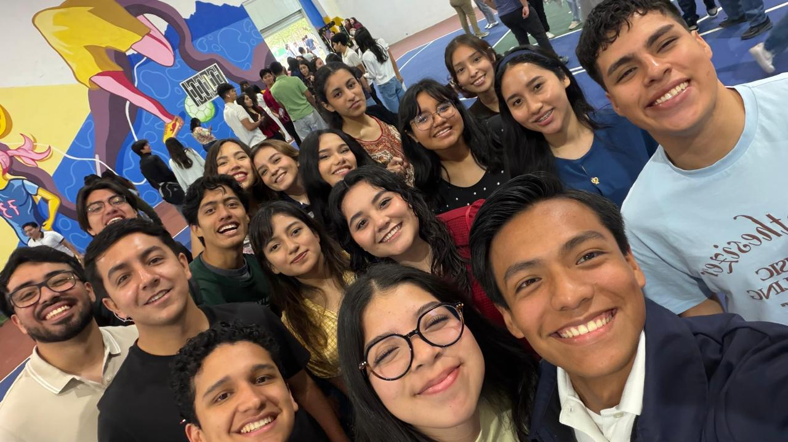
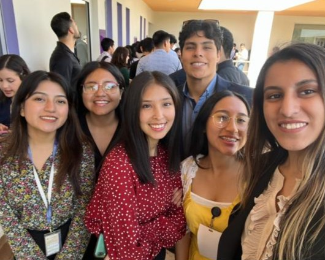
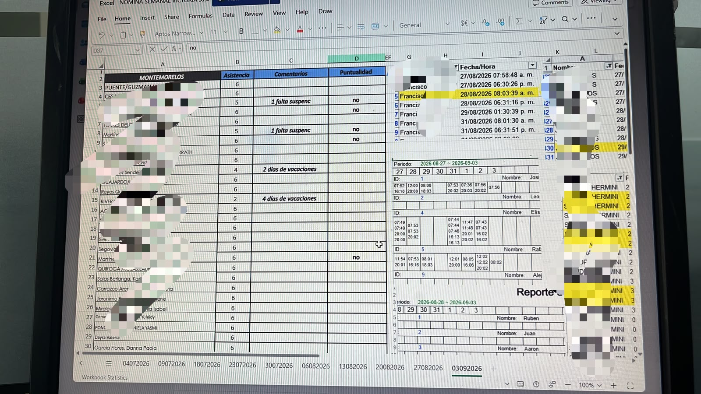
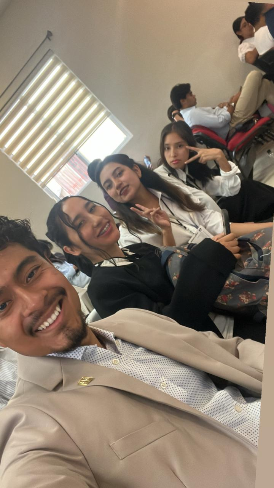
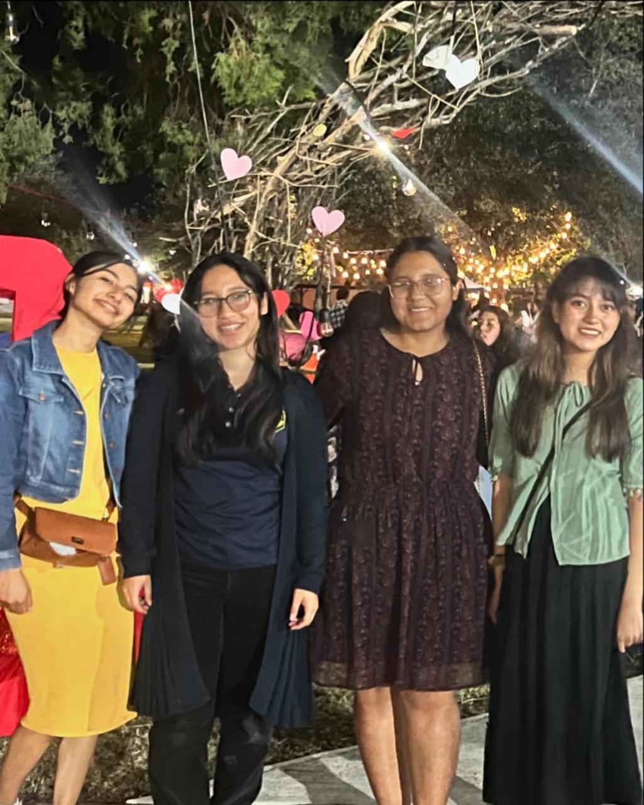

Reflexión final
Dos historias donde pude ayudar a otras personas, lo que aprendí en el camino y las fotos que las cuentan.
Empezar ↓


Gestión administrativa RH
- Qué quería lograr
- Asumí temporalmente distintas responsabilidades administrativas y me convertí en un apoyo directo para la gerente administrativa. Colaboré en la organización de actividades, atención de pendientes y preparación de información requerida durante la auditoría.
- Mi papel
- Más que cubrir algunas funciones, terminé convirtiéndome en una persona de confianza para la gerente administrativa. Me involucré en sus actividades, atendí pendientes y procuré estar disponible para ayudarla en lo que necesitara. Con el tiempo, nuestra relación de trabajo se fortaleció y me convertí en su mano derecha durante ese periodo.
- Cómo lo hice
- Busqué comprender qué necesitaba, anticiparme a algunos pendientes y resolver las tareas que estaban a mi alcance. Durante la auditoría, la acompañé de cerca y procuré quitarle parte de la carga de trabajo. Aprendí a responder ante situaciones nuevas, a ser flexible y a trabajar con responsabilidad incluso cuando las circunstancias cambiaban.
- Lo que cambió
- Esta experiencia me permitió comprender que ayudar también significa estar presente cuando alguien necesita apoyo. Más allá de las actividades que realicé, valoro la confianza que construimos y saber que pude hacer más llevadera una etapa de mucha responsabilidad para otra persona. Me hizo sentir que mi trabajo tenía un impacto que iba más allá de cumplir con mis propias tareas.


Diseño y comunicación
- Qué quería lograr
- Cumplir con mi servicio social universitario apoyando en la comunicación y difusión de las actividades del lugar, mediante la gestión de redes sociales y la elaboración de materiales gráficos.
- Mi papel
- Colaboré en la creación de contenido para redes sociales y en el diseño de distintos materiales de comunicación, como tarjetas, sellos y otros recursos gráficos. También apoyé en actividades que requerían creatividad y disposición para resolver necesidades del equipo.
- Cómo lo hice
- Me involucré en las tareas de comunicación y diseño que iban surgiendo. Como tenía poca disponibilidad entre semana, procuraba organizarme para asistir los domingos. Durante esta experiencia también descubrí que un amigo de secundaria trabajaba ahí, lo que hizo que las visitas se convirtieran en algo especialmente significativo.
- Lo que cambió
- Además de cumplir con mi servicio social y aportar a la comunicación del lugar, recuperé una amistad que había quedado distante. Volvimos a convivir, retomamos el contacto con otros amigos de secundaria y comenzamos a organizar llamadas y salidas como grupo. Me quedo con el cariño de esos domingos y con la sorpresa de haber recuperado una parte de mi vida que no esperaba reencontrar.


Lo que me llevo
En este camino aprendí mucho más de lo que esperaba. Descubrí capacidades que no sabía que tenía, me enfrenté a situaciones que me sacaron de mi zona de confort y entendí que equivocarme también forma parte de aprender. No siempre fue fácil. Hubo momentos de incertidumbre, cansancio y dudas sobre si estaba haciendo las cosas bien, pero también encontré personas que hicieron el recorrido mucho más bonito. Agradezco a Dios por acompañarme, darme dirección y poner en mi camino oportunidades y personas que dejaron algo en mí. A mi familia y amigos, por su cariño, paciencia y apoyo, especialmente en los momentos en los que necesitaba un impulso para continuar. También agradezco a quienes conocí durante esta etapa, porque cada encuentro, conversación y experiencia me dejó una enseñanza.


Gracias.
Gracias a quienes me acompañaron, confiaron en mí y hicieron de este camino una etapa que recordaré con mucho cariño.
 ¡gracias!
¡gracias!



